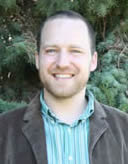

Luke Harmon
|  | I am an Assistant Professor at the University of Idaho. I completed my PhD with Jonathan Losos in 2005. My main interests are in adaptive radiation and phylogenetic comparative methods. |
|---|
Contact: lukeh@uidaho.edu
PO Box 443051, Department of Biological Sciences
University of Idaho
Moscow, ID 83844-3051
Phone: 208-885-0346